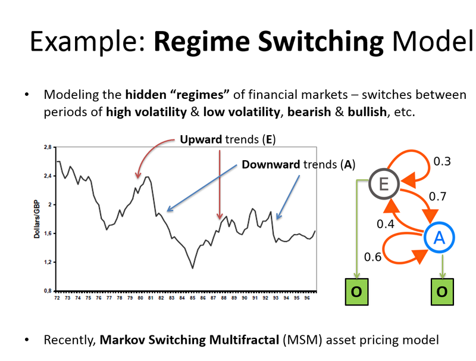

4 Cambio de Regimen (Hidden Markov Models - Regime switching)

Un modelo de cambio de régimen combina dos o más conjuntos de parámetros en un sistema y calcula la verosimilitud de cada régimen en cada momento del tiempo. Definimos un modelo de Markov-Switching de dos estados que permite diferentes medias en el crecimiento:
\[ \nabla y_t=\left\{ \begin{array}{cc} \alpha_1 & s(t)=1 \\ \alpha_2 & s(t)=2 \end{array} \right. \]
Donde s(t) denota el estado de la variable en el momento t. El estado s(t) se determina por una cadena de Markov, la cual depende asimismo de una matriz de transición. Esta matriz muestra la probabilidad de que un estado particular sea seguido por otro estado particular. Además, las probabilidades de transición se suponen estacionarias en el tiempo.
\[ \left[\begin{array}{cc} p_{11} & p_{21} \\ p_{12} & p_{22} \end{array} \right] = \left[\begin{array}{cc} p_{11} & 1-p_{22} \\ 1-p_{11} & p_{22} \end{array} \right] \] Se pueden calcular las probabilidades estacionarias (ergódicas, no condicionadas):
\[ \pi=\left[\begin{array}{c} \frac{1-p_{22}}{2-p_{11} - p_{22}} \\ \frac{1-p_{11}}{2-p_{11} - p_{22}} \end{array} \right] \\ P\{s(t)=1\}=\frac{1-p_{22}}{2-p_{11} - p_{22}} \]
La estimación de los modelos se realiza mediante un algoritmo EM de máxima-verosimilitud
4.1 Ejemplo
library(depmixS4)
library(TTR)
library(ggplot2)
library(reshape2)
library(xts)
library(extrafont)
library(quantmod)
### Leer datos
ibex=getSymbols("^ibex",env=NULL)
ibex=na.omit(ibex)
#crear XTS
mData=ibex$IBEX.Adjusted
colnames(mData)=c("Close")
#crear XTS semanal
semanal=function(mData){
aa=seq.Date(as.Date(min(index(mData))),length.out=2+as.numeric(as.Date(max(index(mData)))-as.Date(min(index(mData)))),by="1 days")
bb=xts(rep(NA,length(aa)),aa)
cc=bb[time(bb[.indexwday(bb)==5])]
dd=sapply(1:(length(cc)-1), function(x) last(mData[seq.Date(as.Date(time(cc[x])),as.Date(time(cc[x+1])),1)]))
coredata(cc[2:(length(cc))])=dd
return(cc)
}
mDataLR=semanal(mData)
#Añadir Rentabilidad
colnames(mDataLR)=c("Close")
#
mDataLR$Rentabilidad <- log(mDataLR$Close) - lag(log(mDataLR$Close),k=2)
#elimnar NAs
mDataLR <- na.exclude(mDataLR)
#Transformar XTS en DF
mDataLRdf <- data.frame(mDataLR)
#Poner la fecha que esta en el nombre de la fila como columna de fecha con formato
mDataLRdf$Date <-as.Date(row.names(mDataLRdf),"%Y-%m-%d")
#definir modelo HHM de markov con 2 estados. Rentabilidad en función de la constante
mod <- depmix(Rentabilidad ~ 1, family = gaussian(), nstates = 2, data = mDataLR)
set.seed(1)
# Estimar
fm2 <- fit(mod, verbose = FALSE)
#Resumen de resultados
summary(fm2)
print(fm2)
# Compute probability of being in each state
probs <- posterior(fm2)
mDataLRdf$pBull <- probs[,2]
mDataLRdf$pBear <- probs[,3]
mDataLRdf$pState <- probs[,1]
#Nombre a la Primera columna
#colnames(mDataLRdf$logret)=c("Rentabilidad")
colnames(mDataLRdf)[1]=nameStock
#Crear df para ggplot2
df <- melt(mDataLRdf[,c(1,2,3,4,5,6)],id="Date",measure=c(nameStock,"Rentabilidad","pBull","pBear","pState"))
##Gráfico Probabilidad
positivoColor=subset(df,df$variable =="Rentabilidad")
pColor=ifelse(positivoColor$value >=0, "blue", "red")
f <- ggplot()+
geom_step(data=subset(df,df$variable ==nameStock),aes(Date, value))+
geom_linerange(data=positivoColor,aes(Date, value,ymin=0,ymax=value),color = pColor)+
geom_linerange(data=subset(df,df$variable =="pBull"),aes(Date, value,ymin=0,ymax=value),color="cornflowerblue")+
facet_grid(variable ~., scales = "free", as.table = TRUE) +
scale_x_date(date_breaks = "1 years",date_labels = "%y")+
theme_bw() +
theme(panel.spacing = unit(0,"lines"), axis.title.x = element_blank(),
axis.title.y = element_blank(),
strip.background = element_rect(colour="black", fill="white"))+
ggtitle("Grafico de Estados")
f
#####ESTADOs
f <- ggplot()+
geom_step(data=subset(df,df$variable ==nameStock),aes(Date, value))+
geom_linerange(data=positivoColor,aes(Date, value,ymin=0,ymax=value),color = pColor)+
geom_linerange(data=subset(df,df$variable =="pBull"),aes(Date, value,ymin=0,ymax=value),color="cornflowerblue")+
geom_step(data=subset(df,df$variable =="pState"),aes(Date, 2-value),color="cornflowerblue",size=1)+
facet_grid(variable ~., scales = "free", as.table = TRUE) +
scale_x_date(date_breaks = "1 years",date_labels = "%y")+
theme_bw() +
theme(panel.spacing = unit(0,"lines"), axis.title.x = element_blank(),
axis.title.y = element_blank(),
strip.background = element_rect(colour="black", fill="white"))+
ggtitle("Ciclos del IBEX35: Alcista vs Bajista")+labs(caption = "Ibex35 Hidden Markov Model two states: rentabilidades quincenales")
f